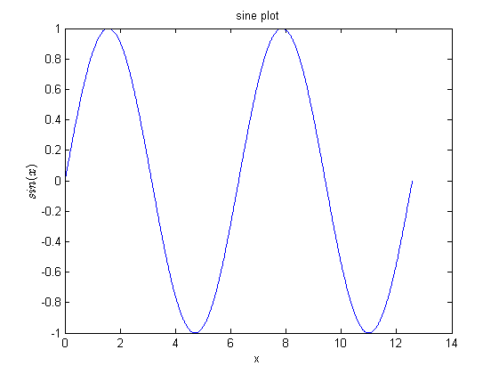

Contents
- Why MATLAB?
- Installation from UCL
- Interface introduction
- Customisation
- SHOW THE EDITOR
- Variables
- Floating point numbers
- Vectors and Matrices
- Matrix concatenation
- string is a special type of array (char)
- Workspace
- clear
- load
- save and clear all, load all
- Basic scalar operations
- Basic functions
- transpose
- Vector initialisation
- Indexing, column-major
- Advanced indexing
- Linear indexing
- Plotting
- Linear algebra
- Least squares
% SWC/Gatsby bootcamp MatLab tutorial 1 % Kevin Li
Why MATLAB?
1. Matlab has a huge built-in library for scientific programming 2. Matlab is interpreted (or just-in-time compiled, as opposed to compiled). 3. This means that it can be used interactively by typing commands at the prompt >> in the command window. 4. But most of your code will be written to program files (matlab functions). 5. Commands are either built-in or written by the user. Every command is a stored in an M-file. 6. There is a very active user community (MATLAB Central, StackOverflow)
Installation from UCL
Interface introduction
Publish View
Customisation
Layout Color Set Path Publish code
SHOW THE EDITOR
Line numbers, path, real-time error check, comments, help file (first comment), debugging, sections, Select + F9
edit flip_a_coin
Variables
No need to declare variable types, but could be confusing Most variables you¡¯ll deal with will be vectors or matrices of doubles or chars.
a = 3; b = 3.14; c = '3.14'; % You can now see them in the workspace % Variable names % first character must be a LETTER % after that, any combination of letters, numbers and _ % CASE SENSITIVE! (var1 is different from Var1) % Built-in variables. Don¡¯t use these names! % i and j can be used to indicate complex numbers % pi has the value 3.1415926¡ % ans stores the last unassigned value (like on a calculator) % Inf and -Inf are positive and negative infinity % NaN represents ¡®Not a Number¡¯
Floating point numbers
eps eps(1) eps(10^100)
ans = 2.2204e-16 ans = 2.2204e-16 ans = 1.9427e+84
Vectors and Matrices
v = [1,2,3,4,5];
m = [1,2,3,4,5
6,7,8,9,0];
disp(length(v))
disp(size(m))
5
2 5
Matrix concatenation
a = [1 2]; b = [3 4]; c = [5;6]; d = [a;b]; e = [d c]; f = [[e e];[a b a]];
string is a special type of array (char)
str1 = '123'; str2 = ['12', '3']; % convert to string m_str = mat2str(m); disp(['v is ', mat2str(v)])
v is [1 2 3 4 5]
Workspace
save data m v save alldata
clear
clear m v
load
load data
save and clear all, load all
clear all load alldata
Basic scalar operations
(3+4*j)^2 1 / 0 0 / 0
ans = -7.0000 +24.0000i ans = Inf ans = NaN
Basic functions
sqrt(2) log(2), log10(0.23) cos(1.2), atan(-.8) round(1.4), floor(3.3), ceil(4.23) angle(i); abs(1+i);
ans =
1.4142
ans =
0.6931
ans =
-0.6383
ans =
0.3624
ans =
-0.6747
ans =
1
ans =
3
ans =
5
transpose
a = [1 2 3 4+i]; a_t = a'; a_dt = a.';
Vector initialisation
o = ones(1,10); z = zeros(23,1); r = rand(1,45); n = nan(1,69); a = linspace(0,10,5); b=0:2:10; c=1:5; d = logspace(1,3,3);
Indexing, column-major
A = rand(5);
A(1:3,1:2);
A(1:2,2:end-1);
A([1 5 3], [1 4]); % different to python
A(1,:);
A(2,:) = 1;
A;
Advanced indexing
vec = [5,3,1,9,7]; ind = find(vec == 9); vec(ind)
ans =
9
Linear indexing
mat = reshape(1:9,3,3); mat(2); mat(2,3); ind = find(vec == 7); sub = ind2sub(size(mat),ind);
Plotting
x = linspace(0,4*pi,1000); plot(x,sin(x)) title('sine plot') xlabel('x') ylabel('$sin(x)$', 'interpreter', 'Latex')
Linear algebra
A = rand(5,5)+eye(5); A_inv = inv(A); B = rand(5,5)+eye(5); A_over_B = A/B; A_B_inv = A*inv(B); A_below_B = A\B; A_inv_B = inv(A)*B;
Least squares
suppose we construct a noisy linear relation between input variables x and output variable y, and we would like to find the parameters of this linear fit
x = [1,2,3,4,5,6,7,8,9,10; 2,1,4,2,6,5,2,1,5,6]'; y = x(:,1) * 3 + x(:,2) * 2 + rand(10,1) * 0.1 + 1; % We would like to find a matrix p such that x*p approximates y in terms of % squared error. % First, we augment x to allow constant bias x_aug = [x, ones(size(x,1),1)]; % Then use the magical \ operation p = x_aug\y; disp(p) % this is equivalent to p2 = pinv(x_aug)*y; disp(p2)
2.9990
2.0030
1.0533
2.9990
2.0030
1.0533